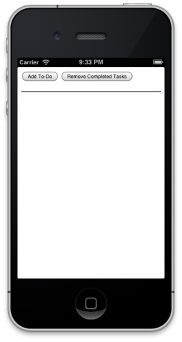

Phonegap 101 will help you get started with the limitless world of application development, in a language we all love HTML!
Find Out MorePhoneGap is a software development framework by Adobe System, which is used to develop mobile applications. To develop apps using PhoneGap, the developer does not require to have knowledge of mobile programming language but only web-development languages like, HTML, CSS, and JScript. PhoneGap produces apps for all popular mobile OS platforms such as iOS, Android, BlackBerry, and Windows Mobile OS etc
Get Started!
cd ~/Downloads/phoneGap-2.3.0/lib/ios/bin
./create ~/Desktop/ToDoer com.christopherstudios.ToDoer ToDoList
<!DOCTYPE html>
<html>
<head>
<title>To-Do List</title>
<link rel="stylesheet" type="text/css" href="css/index.css"/>
<script type="text/javascript" language="JavaScript">
</script>
</head>
<body>
</body>
</html>
<input type="button" value="Add To-Do"/>
<input type="button" value="Remove Completed Tasks"/>
<br/><br/>
<table id="dataTable" width="100%" border="1">
</table>
Build and Run your code same.You will see the following has occured

So you see how easily we inserted buttons in our app.
createNewToDo()Prompts the user to enter a new to-do item. Once the user presses the OK button on the resulting dialog, a new row is added to the table. addTableRow(todoDictionary, appIsLoading) Adds a row to the to-do list table. It accepts several arguments: a dictionary containing both the text of the to-do along with the checkbox state, as well as with a boolean value which indicates if the app is loading or not. This will be explained a little later.
checkBoxClicked()Called whenever the state of a checkbox is changed. It loops through all checkboxes and either applies or removes a strike-through style to the text of the corresponding to-do.
viewSelectedRow(todoTextField)Displays the value of the passed-in text field in a popup dialog.
deleteSelectedRow(deleteButton)Deletes the row that corresponds to the row of the button that was passed into the function.
removeCompletedTasks()Loops through all the table rows and removes the rows where the to-do item is marked as complete.
saveToDoList()Saves the to-do list using the Local Storage API.
loadToDoList()Loads the to-do list when the app is first launched using the Local Storage API.
deleteAllRows()Removes all rows from the table. And that’s it. You can refer back to this section if you have any questions about how each part fits in as you continue working through this PhoneGap tutorial. Now that the basic structure of the functions has been covered, it’s time to implement them in your app.
// create a new to-do
function createNewToDo()
{
var todoDictionary = {};
// prompt the user to enter to-do
var todo = prompt("To-Do","");
if (todo != null)
{
if (todo == "")
{
alert("To-Do can't be empty!");
}
else
{
// append the new to-do with the table
todoDictionary = { check : 0 , text : todo};
addTableRow(todoDictionary, false);
}
}
}
// add a row to the table
var rowID = 0;
function addTableRow(todoDictionary, appIsLoading)
{
rowID +=1;
var table = document.getElementById("dataTable");
var rowCount = table.rows.length;
var row = table.insertRow(rowCount);
// create the checkbox
var cell1 = row.insertCell(0);
var element1 = document.createElement("input");
element1.type = "checkbox";
element1.name = "chkbox[]";
element1.checked = todoDictionary["check"];
element1.setAttribute("onclick", "checkboxClicked()");
cell1.appendChild(element1);
// create the textbox
var cell2 = row.insertCell(1);
var element2 = document.createElement("input");
element2.type = "text";
element2.name = "txtbox[]";
element2.size = 16;
element2.id = "text" + rowID;
element2.value = todoDictionary["text"];
element2.setAttribute("onchange", "saveToDoList()");
cell2.appendChild(element2);
// create the view button
var cell3 = row.insertCell(2);
var element3 = document.createElement("input");
element3.type = "button";
element3.id = rowID;
element3.value = "View";
element3.setAttribute("onclick", "viewSelectedRow(document.getElementById('text' + this.id))");
cell3.appendChild(element3);
// create the delete button
var cell4 = row.insertCell(3);
var element4 = document.createElement("input");
element4.type = "button";
element4.value = "Delete";
element4.setAttribute("onclick", "deleteSelectedRow(this)");
cell4.appendChild(element4);
// update the UI and save the to-do list
checkboxClicked();
saveToDoList();
if (!appIsLoading) alert("Task Added Successfully.");
}
// add the strike-through styling to completed tasks
function checkboxClicked()
{
var table = document.getElementById("dataTable");
var rowCount = table.rows.length;
// loop through all rows of the table
for(var i = 0; i < rowCount; i++)
{
var row = table.rows[i];
var chkbox = row.cells[0].childNodes[0];
var textbox = row.cells[1].childNodes[0];
// if the checkbox is checked, add the strike-through styling
if(null != chkbox && true == chkbox.checked)
{
if(null != textbox)
{
textbox.style.setProperty("text-decoration", "line-through");
}
}
// if the checkbox isn't checked, remove the strike-through styling
else
{
textbox.style.setProperty("text-decoration", "none");
}
}
// save the to-do list
saveToDoList();
}
// view the content of the selected row
function viewSelectedRow(todoTextField)
{
alert(todoTextField.value);
}
// delete the selected row
function deleteSelectedRow(deleteButton)
{
var p = deleteButton.parentNode.parentNode;
p.parentNode.removeChild(p);
saveToDoList();
}
// remove completed tasks
function removeCompletedTasks()
{
var table = document.getElementById("dataTable");
var rowCount = table.rows.length;
// loop through all rows of the table
for(var i = 0; i < rowCount; i++)
{
// if the checkbox is checked, delete the row
var row = table.rows[i];
var chkbox = row.cells[0].childNodes[0];
if(null != chkbox && true == chkbox.checked)
{
table.deleteRow(i);
rowCount--;
i--;
}
}
// save the to-do list
saveToDoList();
alert("Completed Tasks Were Removed Successfully.");
}
removeCompletedTasks() loops through all table rows and determines the state of each row’s checkbox. If the checkbox is checked, then the table row is removed.
// save the to-do list
function saveToDoList()
{
var todoArray = {};
var checkBoxState = 0;
var textValue = "";
var table = document.getElementById("dataTable");
var rowCount = table.rows.length;
if (rowCount != 0)
{
// loop through all rows of the table
for(var i=0; i<rowCount; i++)
{
var row = table.rows[i];
// determine the state of the checkbox
var chkbox = row.cells[0].childNodes[0];
if(null != chkbox && true == chkbox.checked)
{
checkBoxState = 1;
}
else
{
checkBoxState= 0;
}
// retrieve the content of the to-do
var textbox = row.cells[1].childNodes[0];
textValue = textbox.value;
// populate the array
todoArray["row" + i] =
{
check : checkBoxState,
text : textValue
};
}
}
else
{
todoArray = null;
}
// use the local storage API to persist the data as JSON
window.localStorage.setItem("todoList", JSON.stringify(todoArray));
}
saveToDoList() does what it says on the tin, so it just saves the todolist.
// load the to-do list
function loadToDoList()
{
// use the local storage API load the JSON formatted to-do list, and decode it
var theList = JSON.parse(window.localStorage.getItem("todoList"));
if (null == theList || theList == "null")
{
deleteAllRows();
}
else
{
var count = 0;
for (var obj in theList)
{
count++;
}
// remove any existing rows from the table
deleteAllRows();
// loop through the to-dos
for(var i = 0; i < count; i++)
{
// adding a row to the table for each one
addTableRow(theList["row" + i], true);
}
}
}
loadToDoList() provides a mechanism to load up the to-do list that you’ve persisted with saveToDoList().
// delete all the rows
function deleteAllRows()
{
var table = document.getElementById("dataTable");
var rowCount = table.rows.length;
// loop through all rows of the table
for(var i = 0; i < rowCount; i++)
{
// delete the row
table.deleteRow(i);
rowCount--;
i--;
}
// save the to-do list
saveToDoList();
}
deleteAllRows() simply removes all rows from the table; it’s used to clean up the UI in an efficent fashion.
<body onload="loadToDoList()">
<input type="button" value="Add To-Do" onclick="createNewToDo()"/>
<input type="button" value="Remove Completed Tasks()" onclick="removeCompletedTasks()"/>
<br/><br/>
<table id="dataTable" width="100%" border="1">
</table>
</body>
And Voila! You should see this.